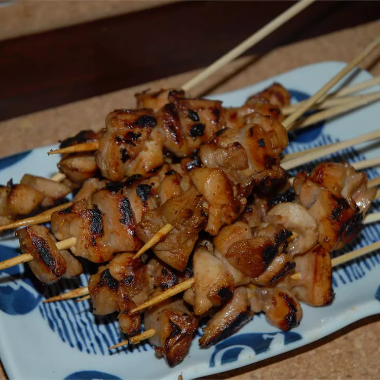

Home
Chicken Satay

Description
Chicken satay is a popular Southeast Asian street food consisting of marinated chicken grilled on skewers and typically served with a peanut sauce dipping sauce. The chicken is usually marinated in a blend of spices, including lime, honey, soy sauce, curry powder, and peanut butter.
Ingredients
- 1 pound skinless, boneless chicken thighs, cut into 1/2 inch strips
- 1 clove garlic, minced
- 2 teaspoons minced fresh ginger root
- 1 tablespoon fish sauce
- 2 teaspoons peanut oil
- 4 shallots, minced
- 2 teaspoons minced garlic
- 2 teaspoons minced fresh ginger root
- 2 small red chile peppers, seeded and minced
- ½ cup crunchy peanut butter
- 1 ¾ cups coconut milk
- 2 teaspoons soy sauce
- 2 teaspoons brown sugar
- 1 ½ tablespoons fish sauce
- 1 ½ tablespoons lime juice
- 12 wooden skewers, soaked in water for 1 hour
Steps
- Toss chicken, garlic, ginger, and 1 tablespoon fish sauce in a bowl until the chicken is coated in the marinade. Cover, and marinate for 1 hour.
- While the chicken is marinating, heat the peanut oil in a skillet over medium heat. Stir in shallots, garlic, ginger, and chile peppers. Cook and stir until the shallot begins to turn golden brown, about 7 minutes. Reduce heat to low, and stir in peanut butter, coconut milk, soy sauce, brown sugar, 1 1/2 tablespoons fish sauce, and lime juice until blended. Simmer very gently for 10 minutes, then remove from heat and keep warm.
- Preheat an outdoor grill for medium-high heat and lightly oil grate. Thread chicken onto skewers.
- Grill chicken skewers on preheated grill until no longer pink in the center, about 3 minutes per side. Serve with warm peanut sauce.